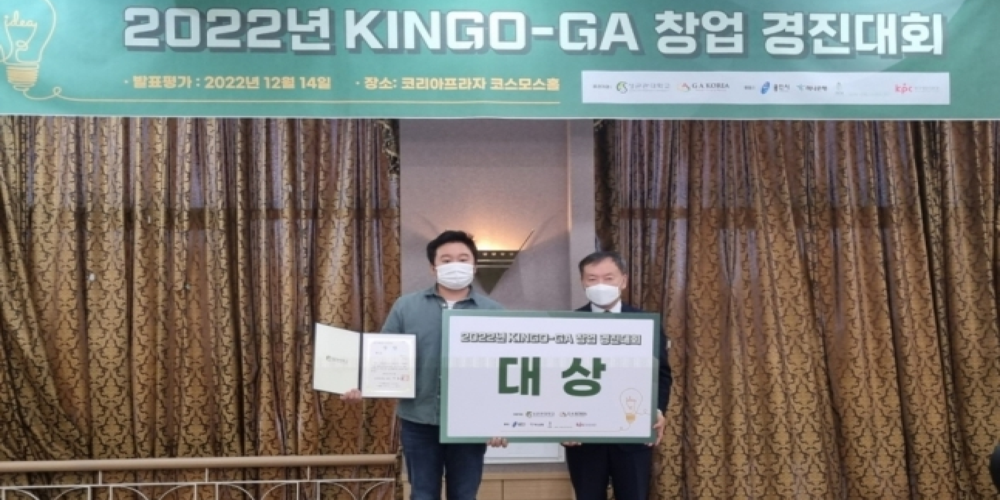
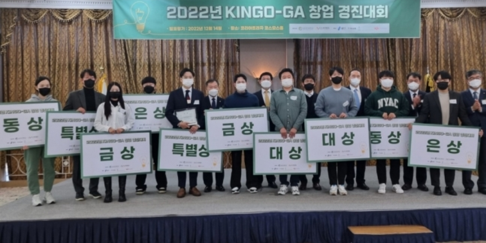

-
2023.01.26
경기·인천지역 창업기업의 우수 아이디어 발굴을 위한 'KINGO-GA
창업경진대회'가 성황리에 막을 내렸다.성균관대학교 창업지원단은 14일
오후 경기 용인시 코리아프라자에서 '2022 KINGO-GA 창업경진대회'를
개최했다.성균관대와 GA 코리아가 공동 주관하고 용인시, 하나은행,
IMM인베스트먼트, 한국생산성본부가 후원한 이날 경진대회에는 신동렬
성균관대 총장, 이용성 GA코리아 사장, 이응로 GA코리아 대표, 김경환
성균관대 창업지원단 단장, 이상일 용인특례시장, 성영수 하나은행
부행장, 변재철 IMM인베스트먼트 대표, 안완기 한국생산성본부 회장과
참가 기업 관계자 등 100여 명이 참석했다.이번 대회에는 경인지역 3년
이내 창업 기업 89개 사가 공모에 지원해 9대 1의 경쟁률을 보였다. 1차
서류평가를 거친 20개 팀이 이날 최종 본선에 올라 10개 팀이 수상의
영광을 안았다.치열한 경쟁 끝에 영예의 대상은 △이주혁 코스모스랩 대표
△박추진 별따러가자 대표에게 돌아갔다. 이들에게는 상금 1000만 원씩이
각각 수여됐다.중략오토바이를 비롯한 이륜차의 운행 데이터를 수집하는
시스템인 '라이더로그'를 개발한 박추진 별따러가자 대표는 "사회문제를
해결하라는 격려의 의미로 대상이란 큰 상을 주신 것으로 받아
들이겠다"고 말했다.

대상을 수상한 박추진 별따러가자 대표(왼쪽)와 신동렬 성균관대
총장/사진제공=성균관대

대상을 수상한 박추진 별따러가자 대표(왼쪽)와 신동렬 성균관대
총장/사진제공=성균관대
특별상(상금 각 500만 원)은 △황금철 ㈜엠텔리 대표 △전진훈
㈜에코앤리치 대표가, 금상(상금 각 500만 원)에는 △전인호 어나더엑스
대표 △조민수 ㈜이씨지 대표가 각각 수상했다. 은상(상금 각 300만 원)은
△권순우 알프레드 대표 △이종인 긱플러스 대표가, 동상에는 (상금 각
200만 원) △변정태 이스턴스카이 대표 △정윤지 다이노즈 대표가 각각
이름을 올렸다. 상금 이외에 우수상 이상 입상자들에게는 투자유치를
위한 IR 기회 제공과 마케팅(언론 보도)이 지원될 예정이다. 신동렬
성균관대 총장은 "경제가 어려울 수록 대학과 지역사회, 벤처기업이
상생할 수 있는 대안을 마련해야 한다"라면서 "성균관대 창업지원단이
최일선에서 창업기업의 경제활동을 적극 지원하겠다"고 약속했다. 이용성
GA코리아 사장은 "이번 경진대회가 참가자들 모두에게 의미있는 행사가
되길 바란다"면서 "참가 기업 모두 어떤 어려움에도 굴하지 않고 그 꿈을
실현하길 바란다"고 전했다. 김경환 성균관대 창업지원단 단장은 "유망
창업 기업을 지원하고자 이번 경진대회를 기획했다"라면서 "올해 경제가
많이 어렵다고 하지만 내년에는 또 다른 비지니스 모델이 있을 것이다.
내년에도 모든 기업들이 성공의 길을 걷길 바란다"고 말했다.
경기=박광섭 기자 (pkts4538@mt.co.kr)